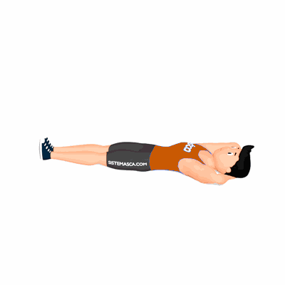

Neck Pull

O exercício além de alongar a coluna, também fortalece os músculos do abdômen com o objetivo de evitar possíveis lesões na execução de outras atividades.
Ficha Técnica
Tipo: Pilates
Grupo Muscular: Abdome
Aparelho: Nenhum
Músculos: Nenhum
Como realizar
- Deite-se de barriga para cima, pernas estendidas, apoiadas no chão e separadas na largura dos quadris;
- Mãos na nuca, cotovelos abertos na linha das escápulas. Mantendo as pernas coladas no chão, levar o queixo ao peito;
- Articular a coluna em flexão vértebra por vértebra, enrolando para cima até o alongamento máximo. O topo da cabeça deve ir em direção ao chão;
- Após, desenrole o tronco até chegar à posição sentado com a coluna neutra;
- Cresça em direção ao teto e fazendo pressão da cabeça contra as mãos inclinar para trás com a coluna neutra;
- Em seguida, desenrole a coluna vértebra por vértebra voltando a deitar sem desabar.
 RC STORE
RC STORE